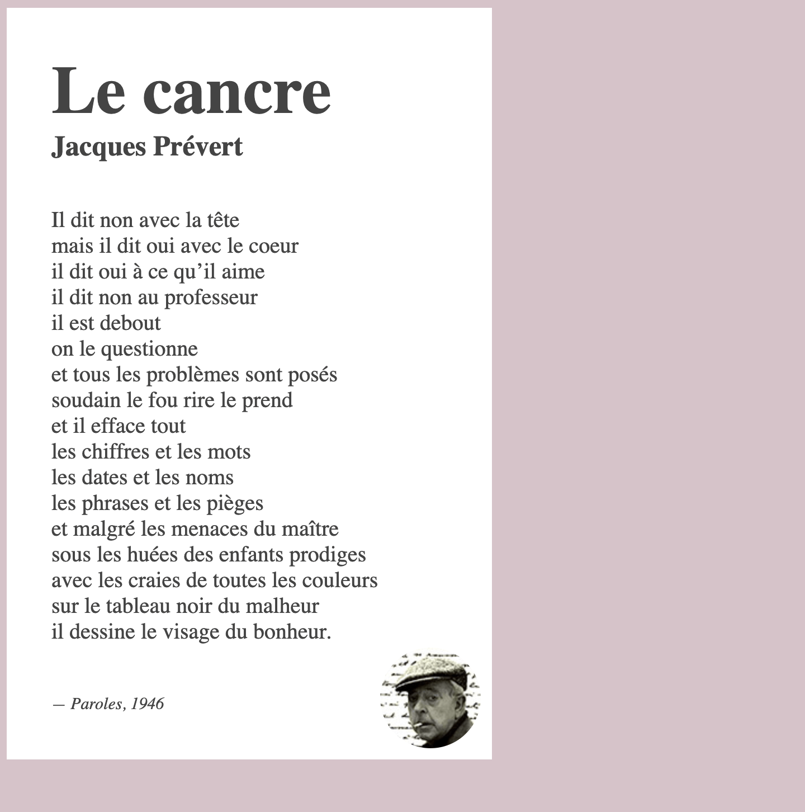

Pour cet exercice vous devrez en CSS compléter l’affichage du célèbre poème: Le cancre, du français Jacques Prévert.
Aperçu du résultat 👇

Matériel
Pen de départ
Couleurs
#d6c3c9
#fff
Requis
Attribuez la couleur de fond rose à la page et blanc au poème.
La taille de police pour le document doit-être de 10px par défaut. Cette taille est choisie afin de nous simplifier différents calculs.
Faites en sorte que le poème prenne la moitié de la largeur de la fenêtre, mais qu'il ne devienne jamais plus petit que 290px lorsque la fenêtre est étroite ou encore plus large que 500px lorsqu'elle est très large.
Attribuez au poème une taille de texte correspondant au double de la taille de police attribuée au document. Ainsi, le texte de base devrait avoir une taille de 20px (2x10) plutôt que 10px.
Afin de laisser respirer le poème, ajoutez-lui une marge intérieure correspondant à 4x la taille de police par défaut de tous les côtés.
Le titre du poème (Le cancre), devrait avoir une taille de police équivalente à 6x celle de la police de base. Par défaut, tous les titres ont des marges verticales. Cependant, celles-ci sont indésirables dans ce contexte de mise en page. Veuillez donc les retirer.
Dans le but de faire ressortir le nom de l'auteur (Jacques Prévert), attribuez-lui une taille de police de 2.5x la taille de base.
Afin de laisser respirer le contenu du poème, ajustez sa marge verticale extérieur ↕️. Par défaut, la balise paragraphe applique une marge verticale équivalente à une lettre. Dans ce cas, la marge souhaitée sera de 2 lettres.
Ajustez la taille de police des crédits afin que celle-ci corresponde à 1.5x la taille de police de base.
Attribuez des coins ronds au portrait de Prévert 🌄 de sorte que l'image semble circulaire et positionnez-là à 10px du bas et de la droite du poème ↘️.
Si tout fonctionne, vous devriez être en mesure de modifier la taille de police de base et de voir tous les textes s'ajuster proportionnellement en fonction de cette nouvelle taille, sans avoir à modifier quoi que ce soit d'autre.
Notes de cours
Position
static, relative, absolute, fixed, sticky